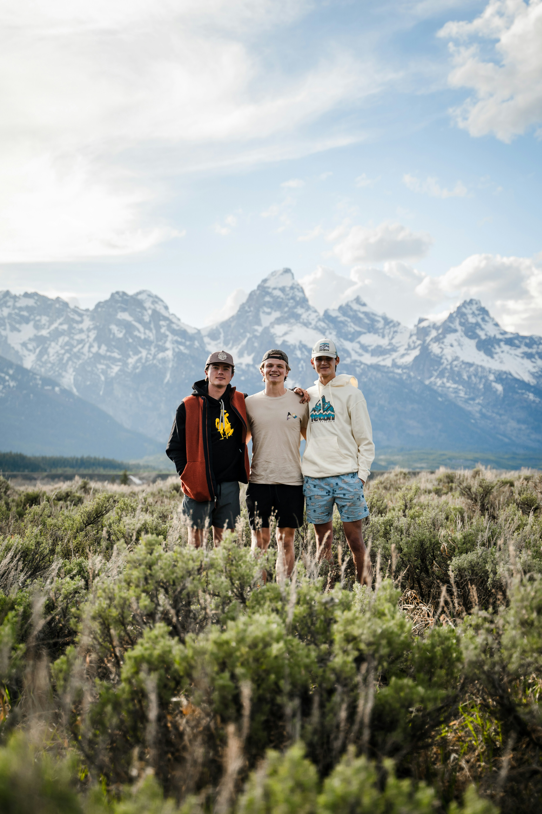
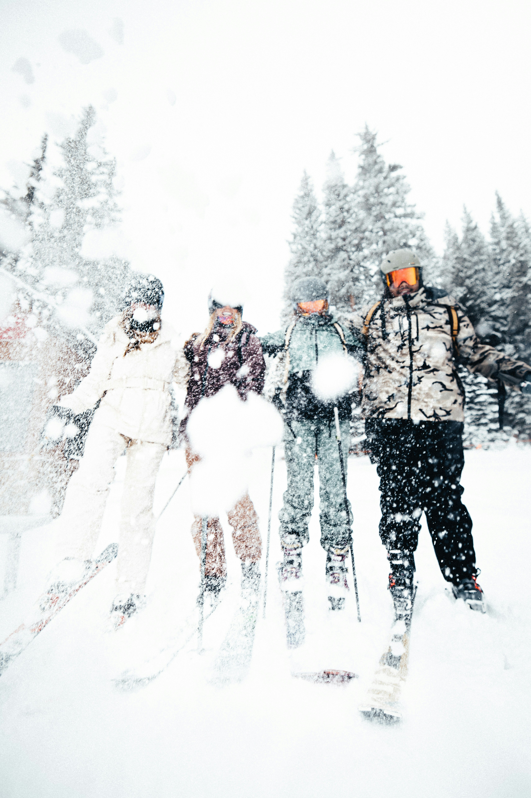
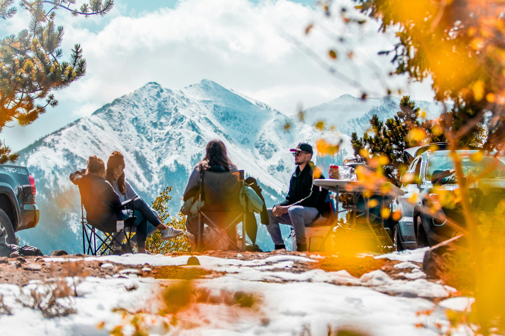

ETT COMMUNITY FÖR AKTIVA MÄNNISKOR
När våra vägar korsas börjar äventyret.
En gemenskap för dig som älskar ett aktivt liv. Här växer nya vänskaper fram, idéer blir till äventyr och vi inspirerar varandra att våga prova något nytt.
CrossPath är en mötesplats för vuxna kvinnor och män som delar ett intresse för ett aktivt liv, äventyr och nya upplevelser. Här möts människor med olika bakgrunder och erfarenheter, men med en gemensam vilja att upptäcka nya platser, träffa nya människor och hitta på saker tillsammans.
Du behöver inte vara en erfaren äventyrare för att vara en del av gemenskapen. Det är en plats där nya vänskaper växer fram, äventyr tar form och vi inspirerar varandra att våga prova nya saker. Oavsett om du vill hitta nya vänner, få inspiration eller planera ditt nästa äventyr är CrossPath platsen där våra vägar möts.